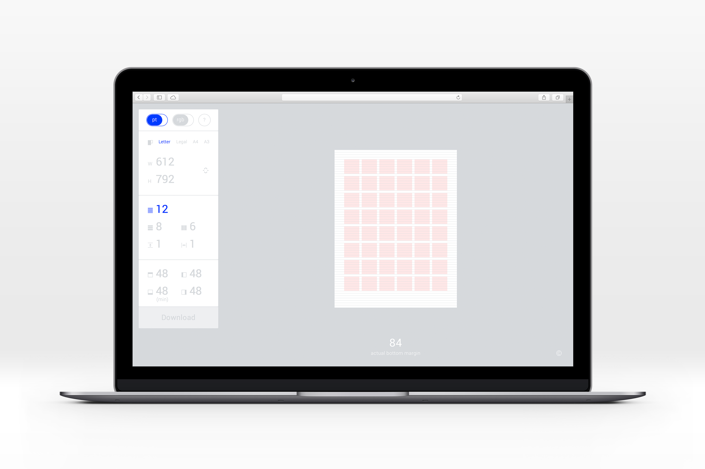
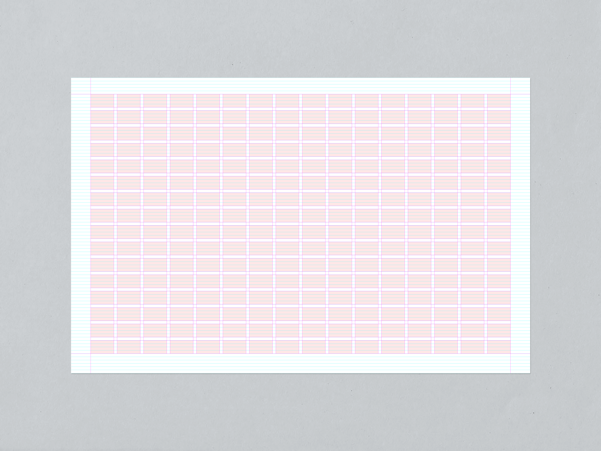
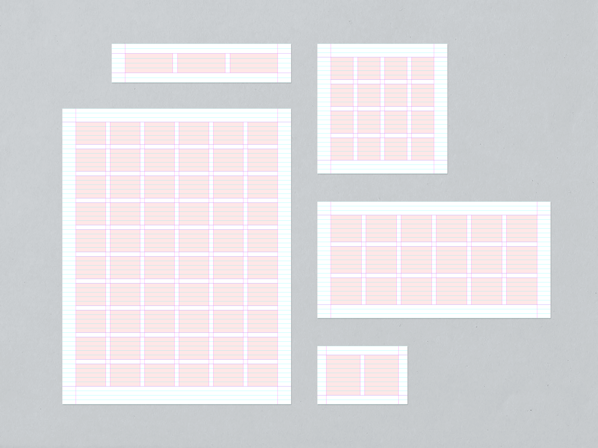
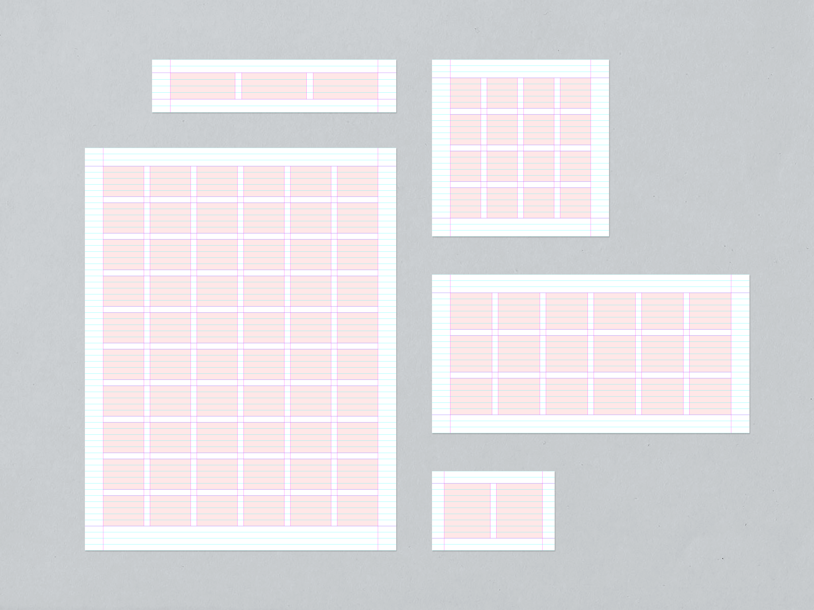

Grid Generator
it can help you generate a modular grid for any print layout, available here

You can choose not only the number of rows and columns but also customise baseline grid increment, gutters, and margins. As the bottom margin is precisely calculated, the rows will always match the baseline grid.
 
